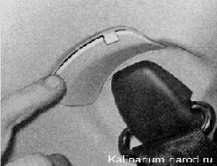
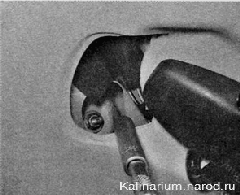
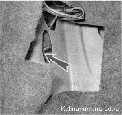
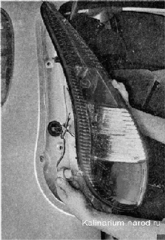
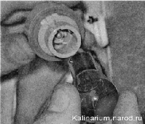

Замена ламп заднего фонаряПоследовательность выполнения 1. Подготавливаем автомобиль к выполнению работы . Выключаем наружное освещение. 2. В багажном отделении снимаем заглушки с накладки задней стойки. 
3. Торцовым ключом на 8 мм отворачиваем гайку верхнего крепления заднего фонаря. 4. Придерживая фонарь снаружи, тем же ключом отворачиваем гайку нижнего крепления заднего фонаря через отверстие в обивке багажного отделения.  5. Отводим задний фонарь от кузова и извлекаем из фонаря патрон с неисправной лампой. 
6. Немного утапливаем в патрон неисправную лампу и, повернув против часовой стрелки, извлекаем ее из патрона.  7. Заменяем лампу, собираем и устанавливаем задний фонарь в обратной последовательности. |